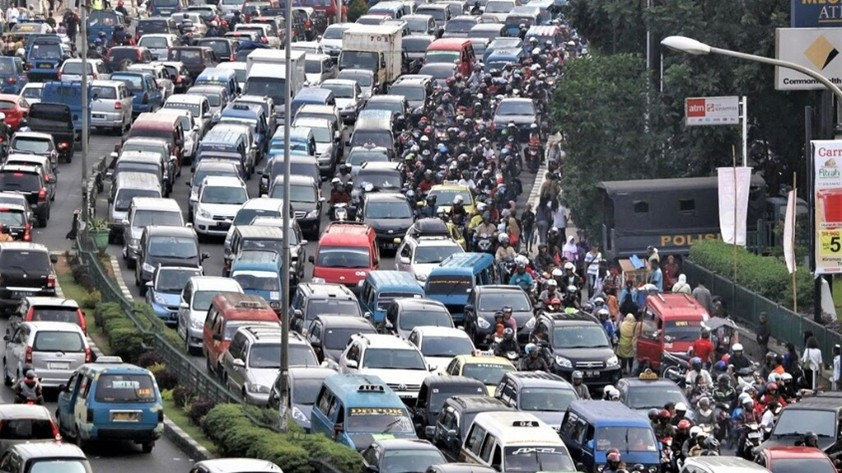
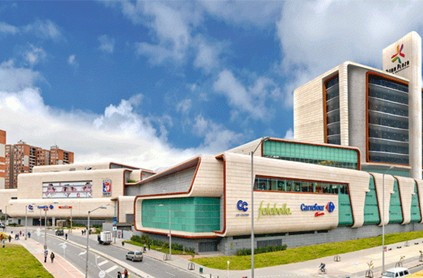

NOTICIAS BOGOTA
Bienvenido al espacio informativo de Bogotá, el corazón político, económico y cultural de Colombia. Aquí encontrarás las noticias más relevantes sobre lo que sucede en la capital, desde decisiones gubernamentales y temas de movilidad hasta seguridad, economía, cultura y vida urbana. Nuestro compromiso es mantenerte informado con contenido actualizado, claro y confiable, cubriendo tanto los acontecimientos del día a día como los temas que impactan el futuro de la ciudad. Bogotá es un punto clave del país, y cada noticia refleja su dinamismo y constante transformación. Mantente al tanto de todo lo que ocurre en Bogotá y accede a una visión completa de la actualidad en una de las ciudades más importantes de América Latina.
ACTUALIDAD: Movilidad afecta a miles de ciudadanos

Bogotá enfrenta diariamente problemas de movilidad que afectan a miles de personas. El alto flujo vehicular, sumado a obras en distintas vías y manifestaciones, genera congestión en varios puntos de la ciudad. Las autoridades trabajan en estrategias para mejorar la circulación, pero el problema sigue siendo uno de los más importantes en la capital.
CULTURA :Sus teatros y sus eventos culturales

La capital colombiana ofrece una amplia agenda cultural con eventos para todos los gustos. Obras de teatro, conciertos, exposiciones y ferias culturales hacen parte de la oferta que atrae tanto a residentes como a visitantes. Estas actividades fortalecen la vida cultural y contribuyen al desarrollo artístico de la ciudad
DEPORTE :Su gran estadio

Los equipos de fútbol de Bogotá continúan participando en torneos nacionales, generando expectativa entre sus seguidores. Cada partido es una oportunidad para demostrar su nivel competitivo y aspirar a mejores posiciones en la tabla. La pasión por el fútbol sigue siendo un elemento clave en la ciudad
ECONOMIA:Su economia gracias a sus grandes centros comerciales

Bogotá mantiene un importante dinamismo económico, con crecimiento en sectores como el comercio, los servicios y la tecnología. Nuevos negocios y emprendimientos continúan surgiendo, impulsando la economía local y generando empleo. La ciudad sigue siendo el principal centro económico del país